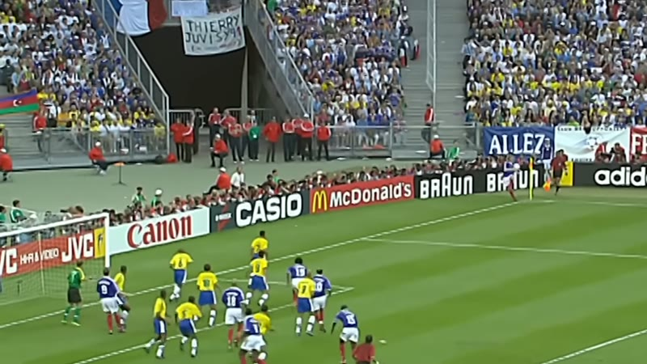
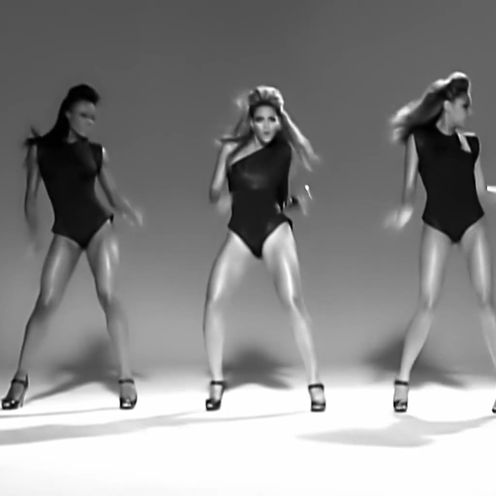

Daft Punk

Duo de musique électronique formé à Paris en 1993 par Thomas Bangalter et Guy-Manuel de Homem-Christo.
Voir la page Daft PunkZidane

Zinédine Zidane, né à Marseille en 1972, a marqué deux buts en finale de la Coupe du monde 1998.
Voir la page ZidaneBeyoncé

Chanteuse américaine née à Houston en 1981, révélée avec le groupe Destiny's Child.
Voir la page Beyoncé